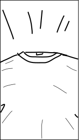
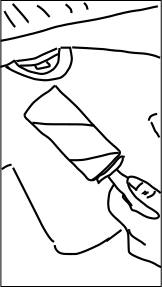
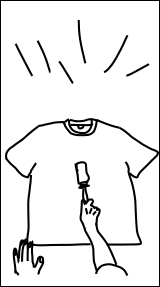
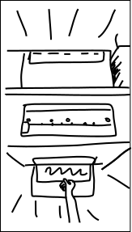
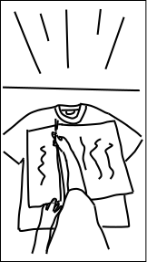
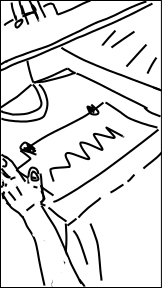
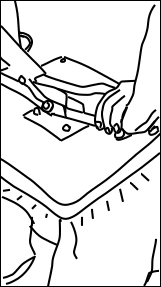
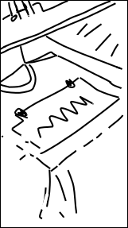
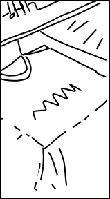
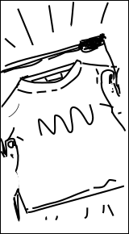

Видео-контент
Самостоятельный тип контента бренда «УниВенд», который объединяет визуальный ряд, фирменные текстовые плашки, анимированный логотип‑водяной знак, звуки и авторскую музыку. Он используется для захвата внимания в ленте, объяснения формата сервиса и демонстрации продукта в реальной среде — от коротких вертикальных роликов до развёрнутых горизонтальных видео для RuTube
Использование
Вертикальные 9:16 ролики, клипы, мемы, ASMR, анонсы горизонтальных видео
Короткие вертикальные видео для постов, анонсов, быстрых объяснений и вовлекающих рубрик
Горизонтальные 16:9 ролики: обзоры, инструкции, длинные истории и полное раскрытие сценария
Вертикальные shorts-ролики для быстрого захвата внимания и перехода к полному видео
Форматы видео
Тип
Соотношение сторон
Разрешение
Где используется
Длительность
Вертикальный клип
9:16
1080 * 1920 px
VK, Telegram, RuTube Shorts
11–90 секунд
Stories / сторис
9:16
1080 * 1920 px
VK, Telegram
11–90 секунд
Горизонтальное
16:9
1920 * 1080 px
RuTube
3-10 минут
Product video
9:16 или 16:9
1080p / 1920p
VK, RuTube
11–600 секунд
Структура
Во всех роликах используется единая визуально-смысловая структура
В начале ролика и на протяжении всего хронометража в кадре присутствует текстовая плашка с коротким маркером формата.
В правом нижнем углу каждого ролика расположен анимированный логотип UniVend, используемый как постоянный водяной знак.
Во всех роликах, где присутствует речь (в кадре или закадровый голос), используются субтитры. Они дублируют ключевые реплики, делают контент понятным при просмотре без звука и поддерживают фирменную типографику: шрифт Gros Ventre, читаемый размер, контрастный цвет относительно фона. Субтитры и текст на плашке работают вместе: плашка задаёт общий контекст, а субтитры передают конкретные фразы и пояснения
Во всех роликах, где присутствует речь (в кадре или закадровый голос), используются субтитры. Они дублируют ключевые реплики.
Прогресс готовности видео
Сценарий ролика
Сценарий — основа для раскадровки, он должен позволять любому участнику команды понять замысел без дополнительных пояснений
- Обозначение таймингов видео для смены кадра и понимания съёмки и хронометража
- Ключевые реплики (закадровый голос, речь в кадре) и вопросы/ответы для формата «стрём или норм»
- Музыка, обозначение “хук” моментов, резкая смена кадра под звук
- Смысл кадров в одном предложении — о чём ролик и зачем он нужен
Тайминг
Визуальный ряд (Действие)
Звук / Аудио
00:00–00:02
Подготовка. Быстрое движение липким роликом по футболке, очистка поверхности
Скрэтч или «вжих», старт активного бита
00:02–00:04
Принтер печатает. Лист выходит, включаем печку
Принтер → «пип-пип» (печка включилась)
00:04–00:05
Позиционирование принта на футболке, выравнивание
«Шлеп» (лист ложится на ткань)
00:05–00:07
Пресс: опускание (или сразу подъем после прогрева)
Глухой удар пресса: «БУМ!»
00:07–00:09
Снятие пленки, появляется готовый принт
Хруст пленки (ASMR)
00:09–00:11
Финал: складывание футболки и упаковка в зип-пакет
«Вжух» (молния пакета)
Раскадровка
- Визуальный ряд: описывается, что именно происходит в кадре (что в фокусе, какое действие, какие объекты в кадре)
- Тип плана и ракурс: общий, средний, крупный, трекинг и т.п. — чтобы оператор понимал, как ставить камеру
- Композиция и расположение элементов: где находится автомат, человек, плашка, логотип, текст в кадре
Раскадровка помогает заранее проверить темп и понятность ролика до выхода на съёмку и монтаж и дает возможность выстроить новые кадры и их визуализацию









Настройки
Камера
Вертикальные ролики — съёмка на смартфон с запасом по разрешению для стабилизации
Горизонтальные RuTube-ролики — зеркальная/беззеркальная камера, 1920 × 1080 px.
Соотношение сторон и разрешение.
9:16, 1080 × 1920 px — вертикальные ролики для VK, Telegram, RuTube Shorts
16:9, 1920 × 1080 px — горизонтальные ролики для RuTube
Частота кадров
24–30 fps для полнометражных роликов, без “экшена”
30–60 fps для вертикальных видео, где требуется динамика и быстрая смена кадра без потери качества
Звук
Для ASMR — запись на петличные микрофоны, минимальный внешний шум, отдельные шоты
Для роликов с голосом — чёткая запись речи, баланс с фоновой музыкой
Свет
Мягкий рассеянный свет без жёстких теней и пересветов, акцент на футболке и автомате
Темп
Без «провисающих» пауз, монтаж по смысловым переходам и по биту, анонсы — 10–15
Цветокоррекция
Естественная картинка с сохранением цвета ткани и читаемости принта
Интеграция графики
Плашки, логотип-водяной знак и другие элементы подключаются через мастер-композиции
Чек-лист перед публикацией
Проверьте видеоролик
Ошибки и примеры
Нарушение проверки
- Формат и соотношение сторон
- Логотип
- Плашка
- Субтитры
Реализованный контент
Часто задаваемые вопросы
Плашка сразу объясняет зрителю тип контента и контекст происходящего, заменяя классический hook‑кадр и удерживаясь в кадре весь ролик, чтобы зритель не терял смысл при любом заходе на видео.
Анимированный логотип UniVend в правом нижнем углу обеспечивает постоянную визуальную привязку к бренду и защищает контент от использования без указания источника.
Да. Во всех роликах с речью субтитры обязательны: они делают контент понятным при просмотре без звука и поддерживают фирменную типографику и стиль коммуникации.
Используются вертикальные ролики 9:16 (1080×1920 px) для VK, Telegram и RuTube Shorts и горизонтальные ролики 16:9 (1920×1080 px) для канала RuTube, с длительностью от 11–90 секунд для вертикальных и 3–10 минут для горизонтальных.
Раскадровка задаёт структуру ролика по кадрам, а shot list переводит её в конкретный список планов для съёмки. Это уменьшает пересъёмки, сохраняет единый формат роликов и упрощает повторение успешных форматов (например, рубрики «стрём или норм», анонсы, мемы).